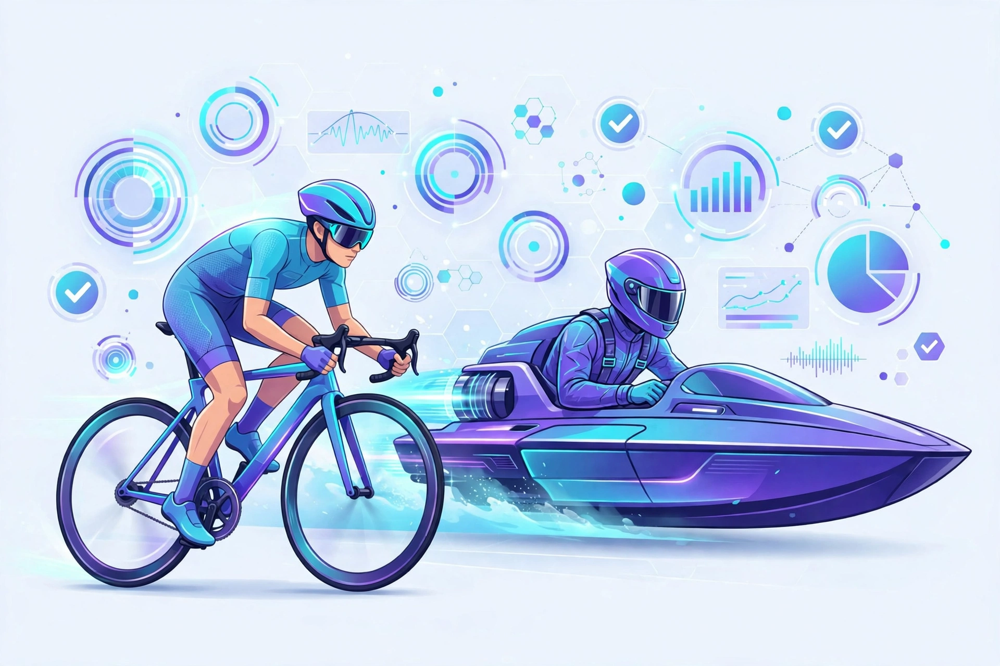
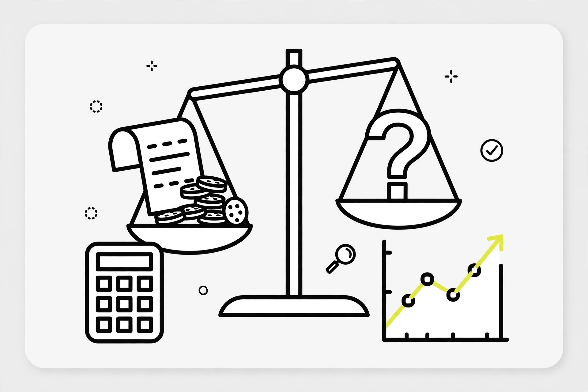

競輪 累計1,248レース検証済み・三連単 24.2% ・ 競艇 累計423レース・三連単 23.6% ・ 白黒ラボ レポート2本公開中 ・ 検証は毎日更新中 ・ ※数字は2026年11月23日時点 ・
SPORTS
予想検証ラボ ― 3つのスポーツ
競輪
全レースの予想と検証を毎日公開。ダッシュボード、選手データ、競輪場データ、KEIRINグランプリ2026特集はこちら。
競輪トップへ → 競艇全レースの予想と検証を毎日公開。ダッシュボード、選手データ、競艇場データはこちら。
競艇トップへ → 競馬JRAの重賞レースだけを対象に検証。重賞特集と注目馬・騎手のデータはこちら。
競馬トップへ →EXPERIMENTS
いま走っている実験

実験 01 ｜ 予想の検証
AI研究部 予想検証ラボ
「AI予想って、本当に当たるの？」
「当たります」と言う予想サイトはたくさんあります。でも全レース分の的中率と回収率まで公開している所はほとんどありません。だから自分たちでやります。外れたレースも隠さず、数字をそのまま出します。
検証ダッシュボードを見る →

実験 02 ｜ 運営の実験
AI研究部 白黒ラボ
「AIだけで、メディアは運営できるの？」
テーマ・調査・試算・記事・サイト制作までAIチームが自律的に行い、人間は承認だけ。「日常の損得問題をデータと試算で白黒つける」サイトをAIだけで回し続けたらどうなるか、記録します。
白黒ラボに行く →
NUMBERS
数字で見るAI研究部
0
検証したレース（競輪＋競艇）
0本
白黒ラボ検証レポート
0AI
働いているAIの数
0人
人間の仕事は「承認」だけ
※ 2026年11月23日時点の実績
WHY
なぜ、こんなことをやるのか
AIは「すごい」と言われますが、何ができて、何ができないのかは、実際にやらせてみないと分かりません。予想させれば的中率が見える。運営させれば見落としや失敗が見える。AI研究部は、その可能性と限界を数字で確かめる場所です。盛りません。都合の悪い数字も出します。
RECORDS